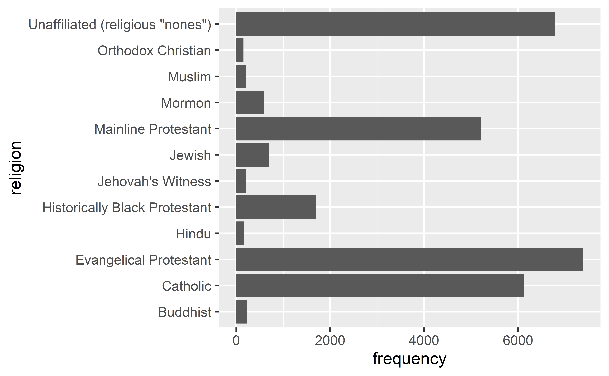

Recoding data
Data Science in a Box
layout: true
class: middle
Case study: Religion and income

.footnote[ Source: pewforum.org/religious-landscape-study/income-distribution, Retrieved 14 April, 2020]
Read data
library(readxl)
rel_inc <- read_excel("data/relig-income.xlsx").small[]
Rename columns
.midi[]
.question[ If we want a new variable called income with levels such as “Less than $30,000”, “$30,000-$49,999”, … etc. which function should we use?]
# A tibble: 48 x 4
religion n income proportion
<chr> <dbl> <chr> <dbl>
1 Buddhist 233 Less than $30,000 0.36
2 Buddhist 233 $30,000-$49,999 0.18
3 Buddhist 233 $50,000-$99,999 0.32
4 Buddhist 233 $100,000 or more 0.13
5 Catholic 6137 Less than $30,000 0.36
6 Catholic 6137 $30,000-$49,999 0.19
7 Catholic 6137 $50,000-$99,999 0.26
8 Catholic 6137 $100,000 or more 0.19
9 Evangelical Protestant 7462 Less than $30,000 0.35
10 Evangelical Protestant 7462 $30,000-$49,999 0.22
11 Evangelical Protestant 7462 $50,000-$99,999 0.28
12 Evangelical Protestant 7462 $100,000 or more 0.14
13 Hindu 172 Less than $30,000 0.17
14 Hindu 172 $30,000-$49,999 0.13
15 Hindu 172 $50,000-$99,999 0.34
# ... with 33 more rowsPivot longer
.midi[]
Calculate frequencies
.midi[]
Save data
rel_inc_long <- rel_inc %>%
rename(
religion = `Religious tradition`,
n = `Sample Size`
) %>%
pivot_longer(
cols = -c(religion, n),
names_to = "income",
values_to = "proportion"
) %>%
mutate(frequency = round(proportion * n))Barplot
ggplot(rel_inc_long, aes(y = religion, x = frequency)) +
geom_col()
Recode religion
.panelset[]
Reverse religion order
.panelset[]
Add income
.panelset[]
Fill bars
.panelset[]
Change colors
.panelset[]
Change theme
.panelset[]
Move legend to the bottom
.panelset[]
Legend adjustments
.panelset[]
Fix labels
.panelset[]